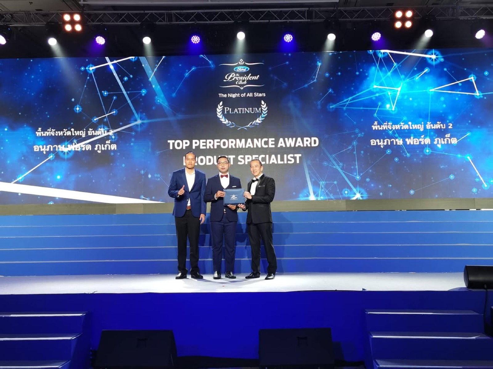
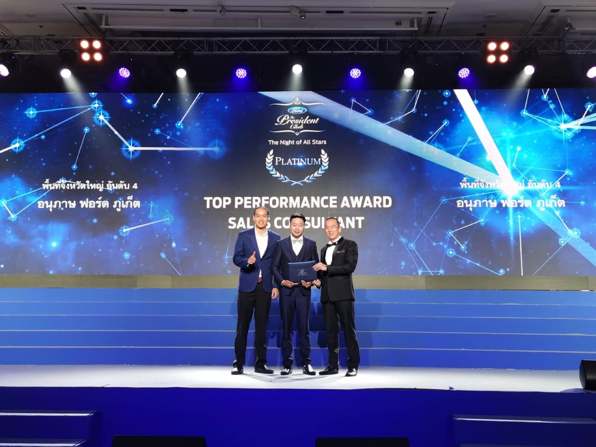
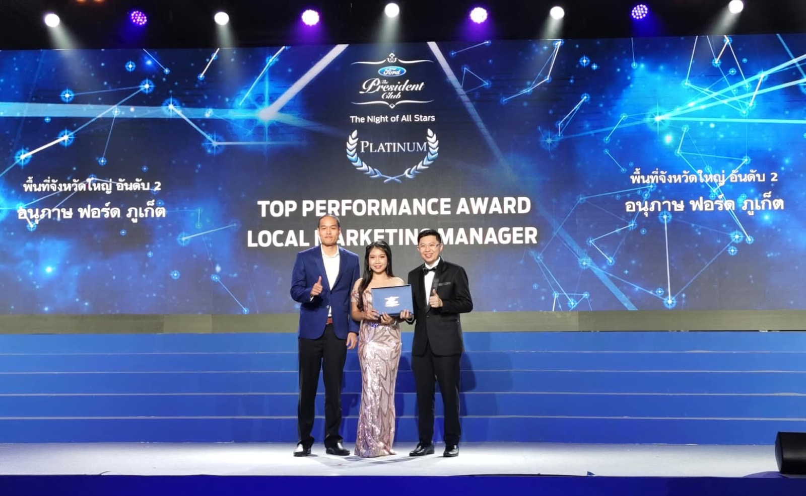
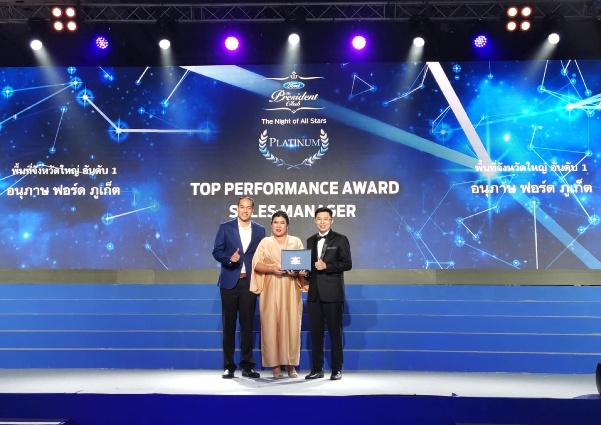
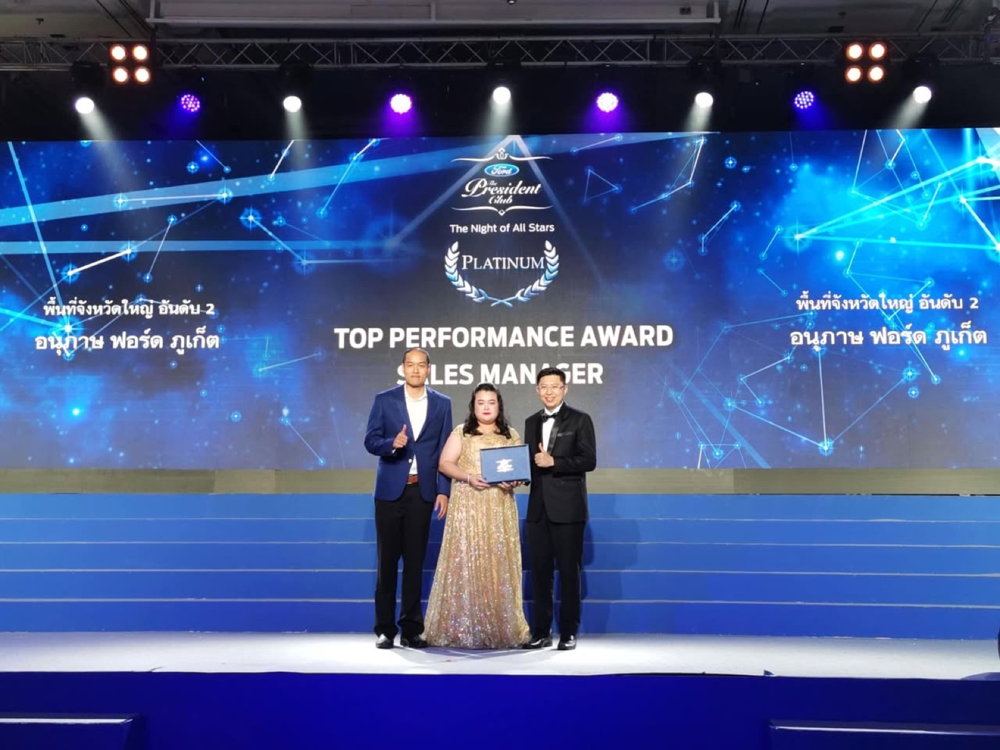

2562 · รางวัล · เหตุการณ์
รางวัลเกียรติยศชาวฟอร์ด — อนุภาษมอเตอร์เซลส์





ใจ สู้หรือเปล่า
ไหว ไหมบอกมา
โอกาส ของผู้กล้า
ศรัทธา ไม่มีท้อ 🎶
รางวัลแห่งเกียรติยศ ชาวฟอร์ด 👑
รางวัลที่ต้องใช้ความเพียรพยายาม ความอดทน ระเบียบวินัย เพื่อให้ได้ประสิทธิภาพในการทำงานระดับสากล อย่างสม่ำเสมอในทุกๆวัน 💪💪💪
น้องๆทุกคน ยอดเยี่ยมมากครับ 👍👍👍
ขอบคุณทีมงานทุกคน และที่สำคัญ ขอบคุณคุณ Songdej Hongyok ที่เป็นส่วนสำคัญที่สนับสนุนให้ทีมอนุภาษฟอร์ดได้รับรางวัลอันทรงคุณค่านี้ 😇
ปล. ยังมีน้องๆท่านอื่นที่ได้รับรางวัล platinum gold และ silver แล้วจะเอาซองไปฝากให้แต่ละสาขานะครับ 😄
#anuphasford
#fordpresidentclub
#topperformanceaward